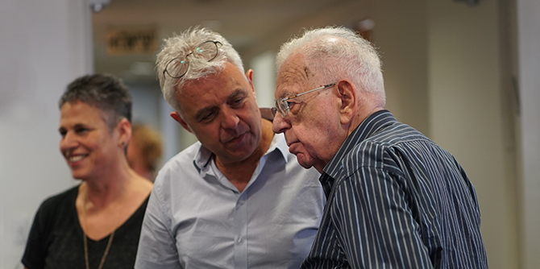

שנת הלימודים בבית ספר מנדל למנהיגות חינוכית נפתחה בתחילת ספטמבר בטקס חגיגי בנוכחות נשיא קרן מנדל, פרופ' יהודה ריינהרץ, מנכ"ל קרן מנדל-ישראל, מר משה ויגדור, מנהל בית הספר, דני בר גיורא, סגל בית הספר ועמיתי שני המחזורים. לעמיתים במחזור החדש רקע מגוון – אנשי חינוך ויזמים חברתיים ובעלי רקע בחינוך הבלתי פורמלי ובצה"ל, והם מגיעים ממגזרים שונים בחברה הישראלית.
"מטרת כל הבאים בשערי בית הספר היא להשפיע ולעשות את החברה הישראלית לטובה יותר, על-ידי שיפור ותרומה לעולם החינוך מתוך אמונה עמוקה שבכוחו של המעשה החינוכי לשנות את האדם ופני החברה", אמר דני בר גיורא. "לצד הצורך בהתחדשות מתמדת, יש לנו מחויבות עמוקה להמשיך ולהוות עוגן לתהליכי עומק ובירור זהות שהם חלק מהמסורת המבורכת והכל כך נדירה של המקום הזה. היכולת לנוע בין מתחים, להחזיק במורכבות בין שני הקצוות, לא לוותר על אף מרכיב, היא אולי התורה שלנו על רגל אחת".
פרופ' ריינהרץ בירך את העמיתים החדשים והוותיקים וסיפר על מורטון מנדל, יו"ר הקרן, החוגג השנה את יום הולדתו ה-96. "אסור לנו לאבד את התקווה שאנחנו מסוגלים להגיע למנהיגות ראויה, בארץ ובעולם", אמר.
הרצאת הפתיחה של שנת הלימודים, שנשא פרופ' שלמה אבינרי, חתן פרס ישראל בחקר מדע המדינה לשנת 1996 וחבר האקדמיה הישראלית למדעים, עסקה בעתידן של הדמוקרטיות המערביות ובשאלה האם הדמוקרטיה בעולם יכולה לעמוד מול אתגרי התקופה.
לבית ספר מנדל למנהיגות חינוכית מתקבלים מדי שנה כעשרים עמיתים ועמיתות בעלי יכולת ניהולית, כישורים אינטלקטואליים גבוהים ומחויבות להוביל שינוי למען שיפור המציאות החברתית והחינוכית בישראל. הלימודים בבית הספר, מיזם משותף לקרן מנדל ולמשרד החינוך, נמשכים שנתיים ובמהלכם העמיתים מפתחים את חזונם האישי והמקצועי ומעמיקים את הידע שלהם ואת יכולתם לתרום לשדה החינוך בישראל.

{kind=link}